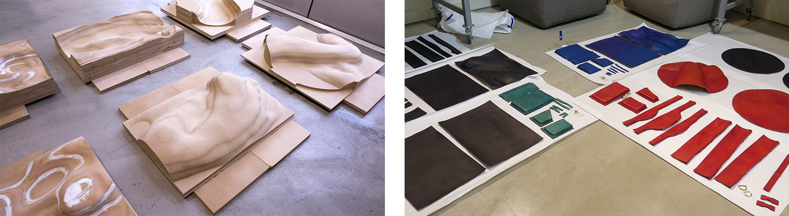
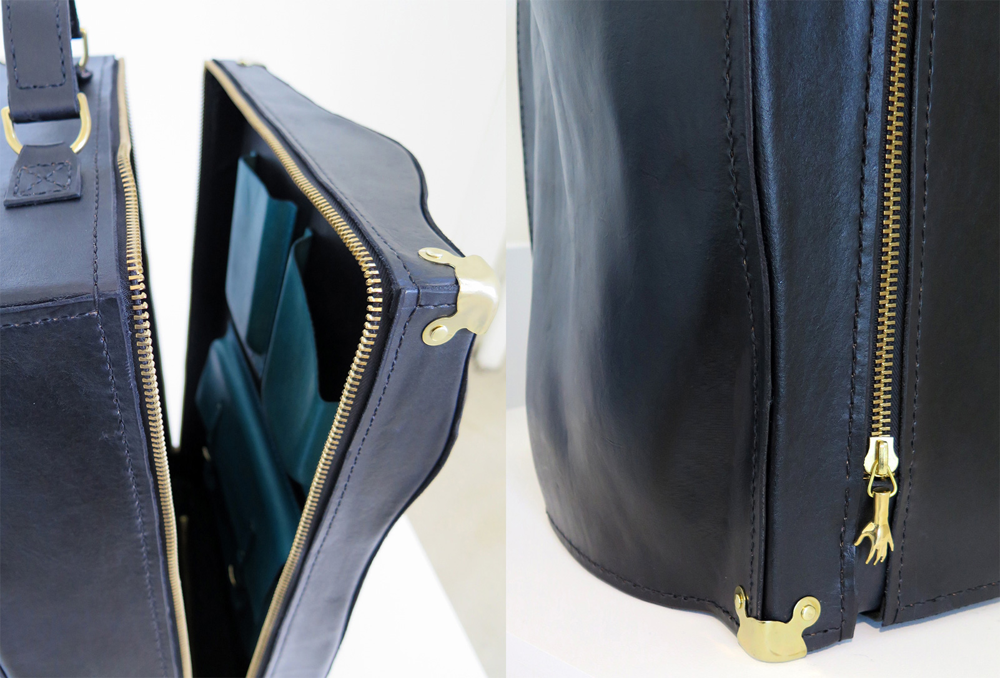

Our body is a sculpture
a sculpture that is constantly in motion
every frame of it is a unique and beautiful form
I want to freeze these moments
I wish to capture the body, and its poetry
-----------------------------------------------------------------
To create a sculpture of the body is not just about capturing a body’s form; it’s more about capturing the energy and tension at that specific moment, and recreating the emotions and sensations from that moment. Encased, a collection of body-shaped leather suitcases, is my exploration into the question - How can I frame the body so that its energy and sensuality is maximized?
I've always been fascinated by the beauty of the human body. I'm especially inspired by works of Rodin, Bernini and Robert Mapplethorpe, by the way they describe the body not as a literal form, but as a vehicle for emotions, tensions, and sensations.
The form of the body was scanned, and the resulted model was CNC machined to make the leather forming molds. All the leather pieces of the suitcases were completely hand-crafted. To learn more about the making process, visit here.
 